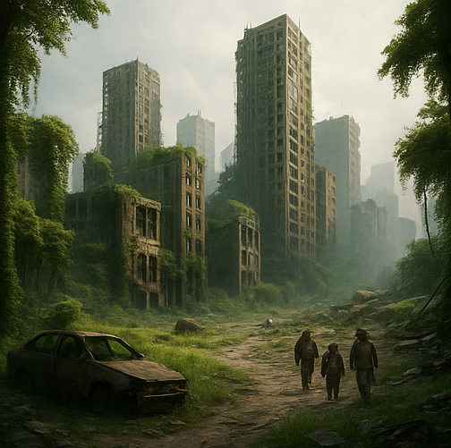

Extinção Total
O mundo como conhecemos chegou ao fim. A civilização foi dizimada por uma catástrofe global e a natureza começou a retomar o planeta em silêncio.
O mundo como conhecemos chegou ao fim. A civilização foi dizimada por uma catástrofe global e a natureza começou a retomar o planeta em silêncio.
Após a devastação, os poucos sobreviventes emergem de abrigos e tentam reconstruir uma nova sociedade. Um novo pacto precisa nascer.
Um seleto grupo escapa da Terra em uma nave estelar. Após décadas em hipersono, acordam em um planeta habitável... Mas ele não está vazio.
A mídia anunciou o desvio do asteroide. Mas tudo era mentira. A elite se refugiou, e o impacto aconteceu. A verdade nunca chegou a tempo.